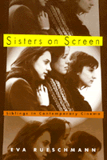

<body bgcolor="#FFFFFF" text="#000000" link="#0000FF" vlink="#CC0000" alink="#CC0000"><center><hr width="350" size="1" align="center" noshade>A rare look at the construction of female identity in post-Sixties cinema<hr width="350" size="1" align="center" noshade><p><a href="https://cdcshoppingcart.uchicago.edu/Cart/ChicagoBook.aspx?ISBN=9781566397469&&PRESS=temple" target="_top">Buy this book!</a> | <a href="https://cdcshoppingcart.uchicago.edu/Cart/Cart.aspx?PRESS=temple" target="_top">View Cart</a> | <a href="https://cdcshoppingcart.uchicago.edu/Cart/Cart.aspx?PRESS=temple" target="_top">Check Out</a></p><p></p></center><!--none//--><h1>Sisters on Screen</h1>
<H2>Siblings in Contemporary Cinema</H2>
<h3>Eva Rueschmann</h3>
<P>cloth 1-56639-746-4 $89.50, Feb 00, <FONT COLOR=#990033>Available</FONT>
<br>paper 1-56639-747-2 $33.95, Feb 00, <FONT COLOR=#990033>Available</FONT>
<BR> 304 pp
6x9
10&nbsp;halftones
</P><P>Perhaps the most vital, emotionally complex, and lasting attachments between women occur between sisters. Whether as best friends or antagonists, "sisters remain entangled in a common tapestry of mutual experience and remembrance, family and history," according to author Eva Rueschmann. Although many of the women-centered films in the last three decades depict the relationship between sisters as a pivotal aspect of a character's psychological development, the now substantial body of feminist film criticism has not taken up this theme in any sustained way.
<p>In <i>Sisters on Screen</i>, Eva Rueschmann explores the sister bond in a wide range of modernist feature films that depart from the conventional cinematic rendering of women's lives. Drawing on the psychoanalytic concept of intersubjectivity, this book emphasizes the role of a woman's relationship and inner world in her continual quest for self-knowledge.
<p>Offering an original and absorbing perspective on women's filmic images, <i>Sisters on Screen</i> reveals how post-1960s cinema has articulated the ways in which biological sisters negotiate mutuality and difference, co-author family histories, and profoundly shape each other's political and personal identities. The films in focus question standards of femininity as they probe into memory, fantasy, and desire, bringing women's realities into view in the process.
<p>Structuring her discussion in terms of life-cycle stages&#151adolescence and adulthood&#151Rueschmann offers an in-depth discussion of such films as <i>An Angel at My Table</i>, <i>Double Happiness</i>, <i>Eve's Bayou</i>, <i>Gas Food Lodging</i>, <i>Heavenly Creatures</i>, <i>Little Women</i>, <i>Marianne and Julianne</i>, <i>Paura e amore</i>, <i>Peppermint Soda</i>, <i>The Silence</i>, <i>Sweetie</i>, and <i>Welcome to the Dollhouse</i>. Rueschmann draws upon the works of filmmakers from the 1970s to the 1990s. Some of the directors included in her study are Allison Anders, Gillian Armstrong, Ingmar Bergman, Jane Campion, Peter Jackson, Mina Shum, Diane Kurys, Kasi Lemmons, Todd Solondz, and Margarethe von Trotta.
<p><i>Sisters on Screen</i> will appeal to anyone interested in women's studies, film studies, psychology, psychoanalytic readings of cinema, women directors, and international modern film.
<BR>&nbsp;<h2>Excerpt</h2><P>Excerpt available at <a href="http://www.temple.edu/tempress">www.temple.edu/tempress</a></p>
<BR>&nbsp;<h2>Contents</h2><P>
<p>Acknowledgments
<br>Introduction
<p><b>Part I: Sisters as Artists in the Cinematic <I>Künstlerroman</I></b>
<br>1. The Romance of Sisterhood: <I>Little Women</I> and Popular Nostalgia in Contemporary Women’s Cinema
<br>2. <I>An Angel at My Table</I>: Sisters, Trauma, and the Making of an Artist as a Young Woman
<p><b>Part II: negotiating Sameness and Difference: Sisters in Adolescence</b>
<br>3. Sororal Rites of Passage: <I>Peppermint Soda</I>, <I>Gas Food Lodging</I>, and <I>Welcome to the Dollhouse</I>
<br>4. Sisters, Fathers, and the Modern Ethnic Family: <I>Double Happiness</I> and <I>Eve’s Bayou</I>
<br>5. Sororophilia and Matricide: Shared Fantasies in <I>Heavenly Creatures</I> and <I>Sister My Sister</I>
<p><b>Part III: Loss, Memory, Recognition: Sisters in Adulthood</b>
<br>6. The Internal World of sisters: Ingmar Bergman’s <I>The Silence</I> and <I>Cries and Whispers</I>
<br>7. The Politics of Intersubjectivity: The Sister Films of Margarethe von Trotta
<p>Conclusion
<br>Appendix: Filmography
<br>Notes
<br>Index
</P><BR>&nbsp;<H2>About the Author(s)</H2>
<table><tr><td valign="top"><img src="/tempress/authors/1400_au.gif" height="90" width="75"></td><td width="100%" valign="middle"><p><B>Eva Rueschmann</B> is Assistant Professor of Cultural Studies at Hampshire College.</P></td></tr></table>
<BR><H2>Subject Categories</H2>
<p><A HREF="/tempress/cinema.html" TARGET="_top">Cinema Studies</a>
<BR><A HREF="/tempress/women.html" TARGET="_top">Women's Studies</a>
<BR><A HREF="/tempress/psycho.html" TARGET="_top">Psychology</a>
</p>
<BR><h2 class="inpageheading">In the series</H2>
<P><I><a href="http://www.temple.edu/tempress/culture.html" onMouseOver="window.status='Click for other books in this series!'; return true;" onMouseOut="window.status=''; return true;" target="_top">Culture and the Moving Image</a></i>, edited by Robert Sklar.
</p><p>The <I>Culture and the Moving Image</I> series, edited by Robert Sklar, seeks to publish innovative scholarship and criticism on cinema, television, and the culture of the moving image. The series will emphasize works that view these media in their broad cultural and social frameworks. Its themes will include a global perspective on the world-wide production of images; the links between film, television, and video art; a concern with issues of race, class, and gender; and an engagement with the growing convergence of history and theory in moving image studies.</p>
<p align="center"><a href="https://cdcshoppingcart.uchicago.edu/Cart/ChicagoBook.aspx?ISBN=9781566397469&&PRESS=temple" target="_top">Buy this book!</a> | <a href="https://cdcshoppingcart.uchicago.edu/Cart/Cart.aspx?PRESS=temple" target="_top">View Cart</a> | <a href="https://cdcshoppingcart.uchicago.edu/Cart/Cart.aspx?PRESS=temple" target="_top">Check Out</a></p><p><font face="Arial" size="1"><a href="copyright.html" onMouseOver="window.status='Web Copyright Policy';return true;" onMouseOut="window.status=''" title="Web Copyright Policy">&copy;</a> 2015 <a href="http://www.temple.edu" target="new" onMouseOver="window.status='Link to Temple University home page';return true;" onMouseOut="window.status=''" title="Link to Temple University home page">Temple University</a>. All Rights Reserved. http://www.temple.edu/tempress/titles/1400_reg.html</font></p>